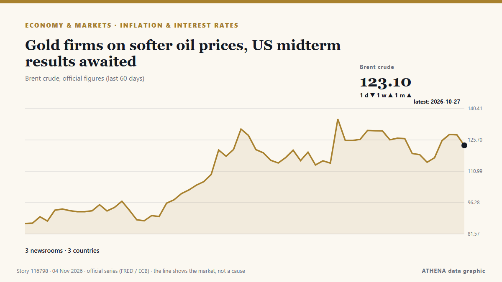

Πληθωρισμός & επιτόκια
ΧορηγούμενοΠαρουσιάζεται από  Cybernetics and Artificial Intelligence Lab Welcome to the Cybernetics and Artificial Intelligence Laboratory, established at the Department of Business Administration of the National and Kapodistrian University of Athens. The lab is headed by Professor Dimitrios Thomakos. The lab aims to do research that can be published in top venues. Our research uses tools and methods of Artificial Intelligence, and lies in the following areas: - Forecasting - Decision making - Cyber security - Finance We are always looking forward to collaborating with exceptional students!
Cybernetics and Artificial Intelligence Lab Welcome to the Cybernetics and Artificial Intelligence Laboratory, established at the Department of Business Administration of the National and Kapodistrian University of Athens. The lab is headed by Professor Dimitrios Thomakos. The lab aims to do research that can be published in top venues. Our research uses tools and methods of Artificial Intelligence, and lies in the following areas: - Forecasting - Decision making - Cyber security - Finance We are always looking forward to collaborating with exceptional students!
| 22 Οκτ | 0 |
|---|---|
| 23 Οκτ | 0 |
| 24 Οκτ | 0 |
| 25 Οκτ | 0 |
| 26 Οκτ | 0 |
| 27 Οκτ | 0 |
| 28 Οκτ | 0 |
| 29 Οκτ | 1 |
| 30 Οκτ | 0 |
| 31 Οκτ | 0 |
| 1 Νοε | 2 |
| 2 Νοε | 3 |
| 3 Νοε | 2 |
| 4 Νοε | 1 |
Οι τίτλοι των ειδήσεων παρουσιάζονται στα αγγλικά, όπως δημοσιεύτηκαν.

Gold firms on softer oil prices, US midterm results awaited
BENGALURU: Gold prices edged higher in early Asian trade on Wednesday as softer oil prices eased inflation concerns, while investors awaited US midterm election results and key labour market data for… από New Straits Times
Consumer prices up 2.8% in October, remain in 2% range for 2nd month
Korea's consumer prices rose 2.8 percent in October from a year earlier, data showed Tuesday, as agricultural product prices continued to decline despite energy costs remaining elevated. από The Korea Times
Bank of England poised to raise rates but may push back on bets for more
Economists polled expect it to raise the bank rate to 4% from 3.75%. από The Business Times
Candidates of Both Parties Pitch Credit Card Interest Rate Caps
Candidates of both parties are advocating caps on credit card interest rates as they campaign for next week’s midterm elections, Bloomberg reported Saturday (Oct. από PYMNTS